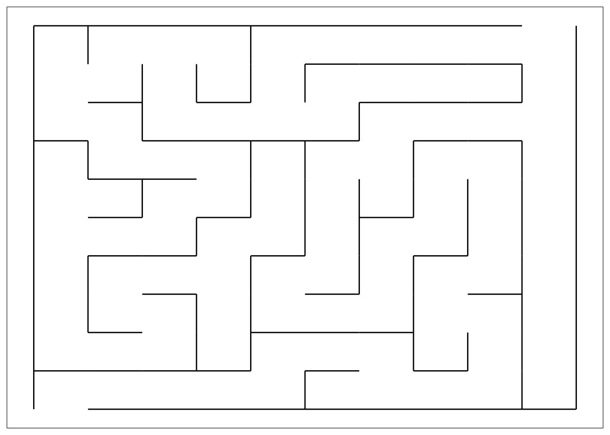
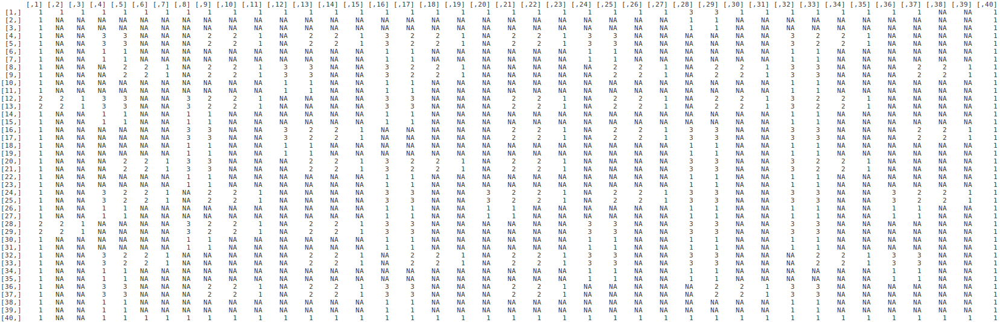
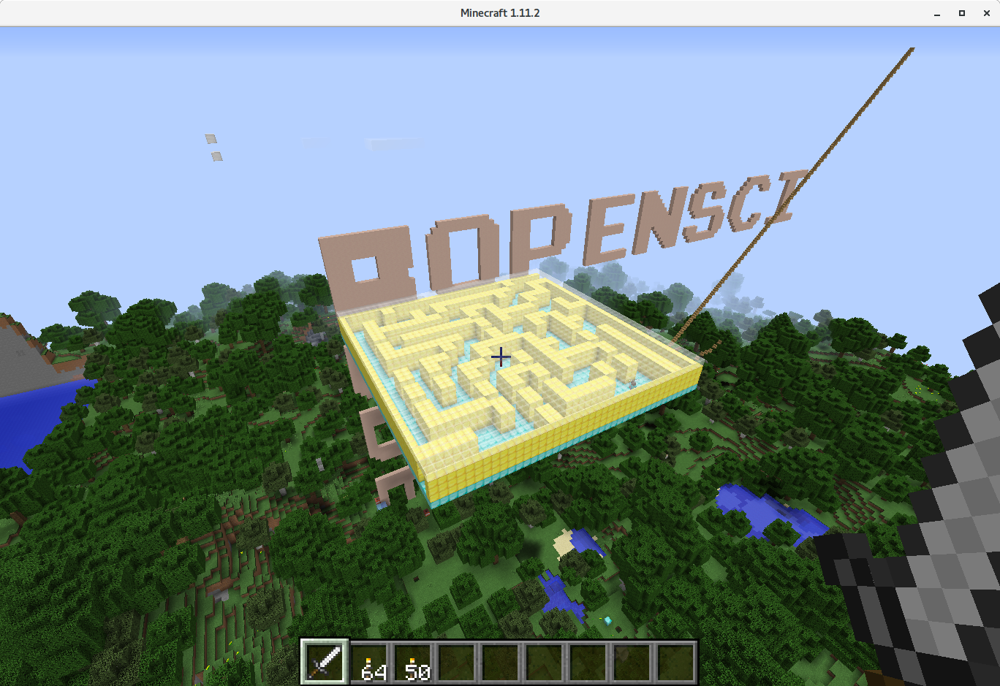

10 Generate a maze in Minecraft
This example illustrates how to generate a perfect maze from R and the render in Minecraft.
10.1 Generate a random maze
First, we need to generate a maze, for which we will use the Rmaze R package’s depth-first search algorithm. As the package is not on CRAN, you have to install from GitHub.
Use the remotes package. (Note that we “forked” the
Rmaze package and made some small corrections, not to the code but to
the package metadata; it can be hard to keep up with changing R policies.)
Then load the package and generate a maze with, for example, 10 x 10 tiles:
This is a graph representation of the maze, which can be rendered with ggplot2 very easily:

10.2 Transform maze graph into matrix
Now we have to transform this graph representation into a binary matrix, where we see in 2D which blocks need to be air or wall. Let’s start with a large empty matrix allowing 4 block for every single cell, as in the matrix we will use blocks for the wall as well (unlike in the above plot):
Then let’s mark the surrounding border with ones:
Here is the top corner of the matrix now:
## [,1] [,2] [,3] [,4]
## [1,] 1 1 1 1
## [2,] 1 NA NA NA
## [3,] 1 NA NA NA
## [4,] 1 NA NA NABut we should leave the entrance and exit open in the bottom left and top right corner:
Here is the top right corner showing the maze exit we just made:
## [,1] [,2] [,3] [,4]
## [1,] 1 NA NA 1
## [2,] NA NA NA 1
## [3,] NA NA NA 1
## [4,] NA NA NA 1Now we need to convert the graph object into a data.frame on which we can iterate later to render the actual wall blocks:
Then let’s extract the x and y positions from the A_x_y names:
for (v in c('from', 'to')) {
mazedf[, (paste0(v, 'x')) := as.numeric(sub('A_([0-9]*)_[0-9]*', '\\1', get(v)))]
mazedf[, (paste0(v, 'y')) := as.numeric(sub('A_[0-9]*_([0-9]*)', '\\1', get(v)))]
}And let’s also record in which direction the edge points:
Now let’s map the x and y coordinates to the 2D matrix:
mazedf[, x := nrow(df) - fromx * 4 + 3 - as.numeric(direction == 'top') * 2]
mazedf[, y := fromy * 4 - 1 + as.numeric(direction == 'right') * 2]And then let’s update the blank matrix NA cells with 1, 2 or 3 to represent the actual walls:
for (i in seq_len(nrow(mazedf))) {
cell <- mazedf[i]
if (cell$wall == 'ON') {
df[cell$x + -1:0, cell$y + -1:0] <- 1
}
if (cell$direction == 'top' & cell$wall == 'ON') {
df[cell$x - 0:1, cell$y - 1:2] <- 2
}
if (cell$direction == 'right' & cell$wall == 'ON') {
df[cell$x - 2:3, cell$y - 0:1] <- 3
}
}I know it was a bit tricky, and probably there’s a nicer and lot more elegant way to do all this :) But at least this works and results in something like:

10.3 Render the maze in Minecraft
Now that we have a binary matrix representation of the maze, it’s very easy to render the related blocks in Minecraft. First, we need to load the miner package and establish a connection to a Minecraft server:
First, let’s find our own position, so we can place the maze relative
to our own location. If you’re the only one on the minecraft server,
it’s easy. (We use tile=TRUE to truncate the coordinates to integers.
Next, we will clean up some space, then generate the floor (diamond) and ceiling (glass), then the wall blocks(gold):
## create objects with number of columns and rows in the dataframe
nr <- nrow(df)
nc <- ncol(df)
## clean up some space
setBlocks(pos[1]+1, pos[2]+1, pos[3]+1,
pos[1]+nr, pos[2]+5, pos[3]+nc, 0)
## add floor
setBlocks(pos[1]+1, pos[2]+1, pos[3]+1,
pos[1]+nr, pos[2]+1, pos[3]+nc, 57)
## add torch
setBlocks(pos[1]+nr - 4, pos[2]+2, pos[3]+2,
pos[1]+nr, pos[2]+3, pos[3]+4, 50)
## maze ceiling
setBlocks(pos[1]+1, pos[2]+5, pos[3]+1,
pos[1]+nr, pos[2]+5, pos[3]+nc, 95)
## 3 blocks tall maze walls
for (i in 1:nrow(df)) {
for (j in 1:ncol(df)) {
if (!is.na(df[i, j])) {
setBlock(pos[1]+i, pos[2]+2, pos[3]+j, 41)
setBlock(pos[1]+i, pos[2]+3, pos[3]+j, 41)
setBlock(pos[1]+i, pos[2]+4, pos[3]+j, 41)
}
}
}The result looks like this:

For a more complete solution, see the mc_maze and mc_mazer functions in the craft package. The mc_maze function generates a maze with given dimensions right in front of a specified player id, while the mc_mazer function does the same but triggered from the chat window by any player.